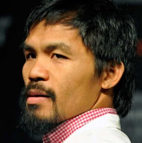
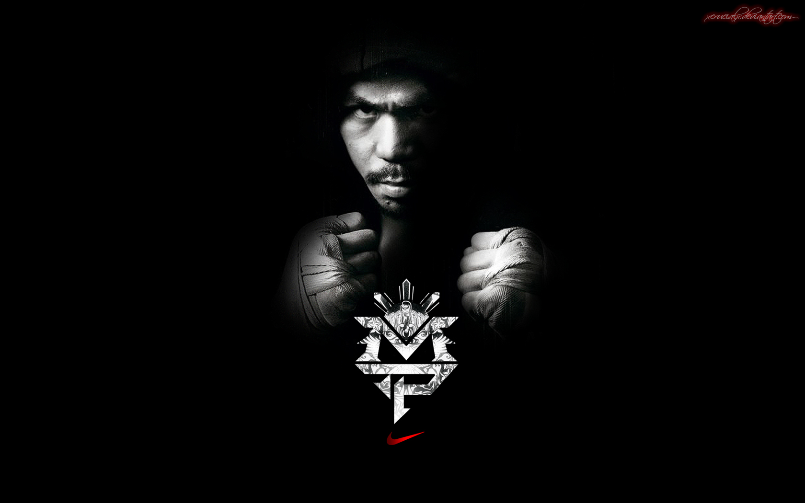
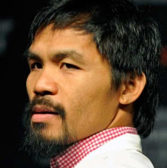
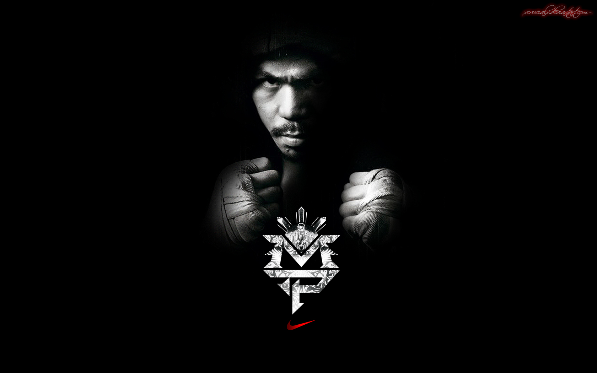

AWARDS
SKILLS
Javascript
Bootstrap
Wordpress
HTML/CSS
Photoshop
Illustrator
PORTFOLIO

CANALS OF ENGLAND

SANKEY

WE GROW
Created by BLACKTIE.CO
Born in the Philippines in 1978, Manny Pacquiao began boxing professionally at age 16. After beating Thailand's Chatchai Sasakul to win the WBC flyweight championship in 1998, he continued to overwhelm his era's top competitors en route to titles in eight separate weight divisions. Along with his boxing career, Pacquiao twice was elected to his country's House of Representatives and won a Senate seat in 2016.
Filipino world boxing champion Emmanuel Dapidran Pacquiao was born on December 17, 1978, to parents Dionesia Dapidran-Pacquiao and Rosalio Pacquiao. He was raised in Kibawe, which is located in the Bukidnon province of Mindanao, Philippines.
In December 1998, Pacquiao won a bout against Chatchai Sasakul of Thailand, taking the World Boxing Council flyweight title—his first major championship. Moving to a higher weight division, he scored a sixth-round technical knockout of Lehlo Ledwaba in 2001 to capture the International Boxing Federation junior featherweight title. He went on to win several high-profile bouts in the years thereafter, claiming world titles in a total of eight different weight divisions.
Ten years after his win against Sasakul, in December 2008, Pacquiao was named victor of an eight-round, non-title welterweight bout against famed American boxer Oscar De La Hoya. The fight generated nearly $70 million from viewers of pay-per-view—the broadcasting format for most of Pacquiao's fights since the early 2000s.
Pacquiao went on to fight United Kingdom boxing star Ricky Hatton in May 2009, in a light welterweight division bout in Las Vegas. Pacquiao won the fight by a knockout in the second round, taking The Ring's junior welterweight championship. Later that year, in November, he beat Puerto Rico's Miguel Cotto in a 12-round bout, for the World Boxing Organization welterweight title—an honor he defended in 2010, when he outlasted Ghanaian boxer Joshua Clottey in a 12-round fight.
On June 9, 2012, Pacquiao lost a 12-round bout with American boxer Timothy Bradley, in a 115-113 decision by three judges. The fight was an incredible upset for boxing fans, as Pacquiao had won seven rounds to Bradley's five. The fight, broadcast on pay-per-view, was watched by thousands of fans worldwide. The judges' decision spurred wide speculation, as both critics and fans argued that Pacquiao should have been named the victor.
That December, Pacquiao suffered another difficult defeat. He was knocked out by Juan Manuel Marquez in the sixth round of their welterweight bout in Las Vegas. Pacquiao explained his loss by saying "I just got hit by a punch I didn't see," according to the New York Daily News.
Pacquiao's impeccable footwork, speed and quick jabs have kept boxing fans on their feet. And his endearing smile, charm and chiseled physique have only helped to boost his public appeal. In 2003, he was voted the Philippines' Person of the Year over President Gloria Macapagal Arroyo. He was also named "Fighter of the Decade" for the 2000s by the Boxing Writers Association of America, among various other honors.
Following a win over Brandon Rios in November 2013, Pacquiao emerged the victor in an April 2014 rematch with Bradley to regain the WBO welterweight title. He then scored his third straight win by holding off Chris Algieri in November.
In February 2015, it was announced that Pacquiao would fight undefeated American Floyd Mayweather at the MGM Grand Garden Arena in Las Vegas on May 2, 2015. Billed the "Fight of the Century," the long-anticipated bout between the era's two signature boxers brought in a record purse via gate receipts and pay-per-view buys. Despite fighting with an injured right shoulder, Pacquiao gamely went after Mayweather but was unable to land many effective punches. He lost a unanimous decision to drop his record to 57-6-2.
Following another loss, to Australia's Jeff Horn in July 2017, it seemed that the former champion was nearing the end of the road in his boxing career. However, after a year off, Pacquiao scored a seventh-round knockout of Argentina's Lucas Matthysse, showing that he remained a formidable presence in the ring.
In 2007, Pacquiao made his first attempt to enter politics, running for a seat in the House of Representatives of the Philippines. He was defeated by incumbent Rep. Darlene Antonino-Custodio, and returned to life as a full-time boxer. In 2009, however, Pacquiao formed a new Filipino political party, the People's Champ Movement, and again ran for a legislative seat. He won in a landslide, beating opponent Roy Chiongbian to become the Sarangani province representative in May 2010.
Three years later, Pacquiao earned a second term after running unopposed for reelection, and in 2016, the boxing great again leveraged his popularity to win a seat as a Philippines senator.
Along with his athletic and political careers, Pacquiao has shown off his vocal abilities by releasing two albums and collaborating on other tracks. He has appeared in several movies, and starred in the Philippine sitcom Show Me Da Manny from 2009-11. A documentary about his life, Manny, was released in the United States in early 2015.
acquiao's wife, Jinkee, was elected vice governor of Sarangani in 2013. They have five children together.
Javascript
Bootstrap
Wordpress
HTML/CSS
Photoshop
Illustrator

CANALS OF ENGLAND
SANKEY

WE GROW
Created by BLACKTIE.CO